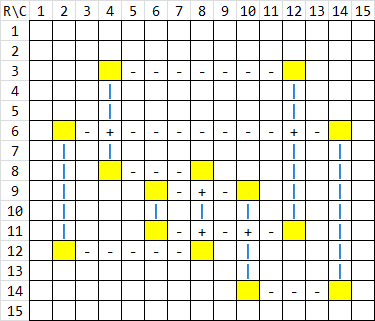

给定一个两侧各有 $n$ 个点的二分图 $G = \left( V_1, V_2; E \right)$。记 $V_1 = \left\{ L_1, L_2, \cdots, L_n \right\}, V_2 = \left\{ R_1, R_2, \cdots, R_n \right\}$。
同时又给定了一个数组 $a_1, a_2, \cdots, a_n$，它定义了 $G$ 的边集：$$ E = \left\{ \left( L_i, R_j \right) \mid 1 \leq i \leq n; 1 \leq j \leq a_i \right\} $$
求 $G$ 中有多少个不同的至少包含三个顶点的 (简单) 圈。注意圈是不能经过重复顶点的回路。
第一行包含一个正整数 $n$ ($n \leq 5000$)，表示二分图各部的点数。
第二行包含 $n$ 个正整数 $a_1, a_2, \cdots, a_n$ ($1 \leq a_i \leq n$)，表示边的生成参数。
输出一行一个整数，表示 $G$ 中不同的圈的数量模 $998244353$ 的结果。
由于二分图的各个点的位置关系并不重要，故可以不妨假设 $a_1 \leq a_2 \leq \cdots \leq a_n$。
对于二分图的问题，我们通(you)常(shi)会将其与方格表互相转化：即用行表示其中一部，列表示其中另一部。
于是，我们就将其重新叙述为一个方格表上的问题 (注意二分图中的圈在方格表中对应的元素)：
在一个 "畸形" 的方格表 (事实上它是一个 Young 表) 中，方格表是左、下对齐的，且后一行的格子数不少于前一行的。
定义方格表中的 "圈" 是一个小方格的序列，满足相邻两个小方格同行或同列，且同行、同列的邻格对相互交错排列，且每一行、每一列至多出现两个小方格。
求有多少种不同的 "圈"。
下图就是一个 "圈" 的例子：
我们考虑从上往下考虑这个 "圈" 中包含的所有格子，并将所有标黄的格子投影到横轴上，得到若干个投影后的格子：
每个投影后的格子对应原方格表中的一 "列" (以后将投影后的格子简称 "列")，这个 "列" 中的黄格为 $0, 1, 2$ 之一。
每一行有四种本质不同的操作：
什么也不干。
如上图中的第 $1, 2, 4, 5, 7, 10, 13, 15$ 行。
选择两个当前黄格数为 $0$ 的 "列"，将该行中这两列对应的格子标黄。
如上图中的第 $3, 6, 9$ 行。它产生的效果是有两 "列" 的黄格数从 $0$ 变为了 $1$。
选择一个当前黄格数为 $0$ 的 "列" 和一个当前黄格数为 $1$ 的 "列"，然后将这两列格子标黄。
如上图中的第 $8$ 行。它产生的效果是有一 "列" 的黄格数从 $0$ 变为 $1$，另一列的黄格数从 $1$ 变为 $2$。如果我们仅仅从集合的角度来分析，相当于有一列的黄格数从 $0$ 变成了 $2$。
选择两个当前黄格数为 $1$ 的 "列"，将该行中这两列对应的格子标黄。
如上图中的第 $11, 12, 14$ 行。它产生的效果是有两 "列" 的黄格数从 $1$ 变成了 $2$。
但这仅仅只是一个充分条件，而非必要条件。比如，下面的 "圈" 也满足上面所描述的过程，但它压根就不是一个 "圈"，而是两个 "圈"：
于是，我们需要对整个过程进行更多的限制。
首先，我们在加入黄格的时候，就应当把能连的线段连上了，然后在最后一步要 "闭合" 的时候 (图 1 第 $14$ 行，图 2 第 $12, 14$ 行) 不允许更新，而直接计入答案。于是就不会产生像右图一样闭合了但主过程还未结束的情形。
那什么时候这条边会导致一个圈闭合呢？没错，就是这条边的两个端点已经连通。
诶，连通。这个性质比较抽象，怎么进行具体地刻画呢？
对，不要忘记我们是按行考虑的，那么也就是说，我们可以用并查集维护各个列之间的连通性。当执行 4. 类型的操作时，就会导致本不连通的两个列 "连通" 了，然后最终到连通块数为 $1$ 的时候统计一下答案即可。
那么，四种操作对连通块个数的影响 (增量) 分别是：
于是基本的 DFA 转移图已经差不多成型了，于是就开始 DP 了。
记 $f_{i, j}$ 表示前 $i$ 行 $j$ 个连通块的方案数，那么每次新增一行，枚举是哪种操作。考虑四种转移的转移系数：
不难发现，我们还需要记录一个变量 $c$ (和 $j$ 独立)，表示当前黄格数为 $0$ 的列数。而在插入新的行的过程中，随着 $a_i$ 的增大，这一维还需要被整体平移。
于是状态数为 $O \left( n^3 \right)$，无法通过。
那我们怎样才能避免记录这个状态 $c$ (黄格数为 $0$ 的列数) 呢？
我们考虑一行一行插入的过程中，操作 2 和操作 3 会将新的格子插入连通块，从而需要在插入时统计有多少种插入方案。
那如果我们不这样做，一次性在一开始就插完呢，又会怎么样呢？
此时，相当于一开始就固定所有 "列" 的一个子集，并强制这些列的黄格数为 $1$。
同时，先不考虑方格表畸形的情况 (即方格表是 $n \times n$ 的/原图是一个完全二分图)，于是，操作就从 4 种变为了 2 种：
什么也不干。
选择当前的两个连通块，将其合并。它产生的效果该行对应两列的格子被标黄。
但是这里需要注意一个问题：当时我们在合并一个连通块的时候，有 $4$ 种方案：头碰头、头碰尾、尾碰头，以及尾碰尾。现在，我们一开始固定后，这些连通块的大小只有 $1$，那么对于大小为 $1$ 的连通块，其实头和尾就是同一个东西，会造成重复计算。
难到，又要开一维状态表示有多少个连通块大小为 $1$？这不又打回原形变成 $O \left( n^3 \right)$ 了么，一点用都没有。
所以显然不能这么干，那怎样才能将大小为 $1$ 的连通块和大小超过 $1$ 的连通块区分开来呢？
事实上，我们可使用这种操作：对连通块 "定向"。
因为最后的结果是一个圈，因此在这个圈 "闭合" 之前各个连通块一定是一条链，而一条链有 "正" 和 "反" 两个方向，对于其中每一个方向，都有唯一确定的 "头" 和 "尾"。
考虑两条链 $h_1 \to t_1, h_2 \to t_2$ 合并时，事实上就只有两种不同的方案了 (因为一定是 "尾" 接 "头")：$h_1 \to t_1 \color {fuchsia} \to h_2 \to t_2$ 以及 $h_2 \to t_2 \color {fuchsia} \to h_1 \to t_1$。
于是，这一项的贡献系数为 $2$ (即 $j$ 个连通块条链时，方案数为 $2 \dbinom j2$)。
不难发现，这种方法对大小为 $1$ 的连通块 (即单点) 也是成立的：因为只要把单点的头和尾设为自己就可以了。
综上，我们就得到了一个 $O \left( n^2 \right)$ 做法：用 $f_{i, j}$ 表示前 $i$ 行目前还剩下 $j$ 个连通块 (链) 的方案数。
初始时，所有连通块大小为 $1$，因此 $f_{i, j} = \dbinom nj$。
考虑两种操作：
最后更新答案的时候只需要最后一步不允许 "闭合" (即一个连通块不能转移到零个连通块，这好像本来就转移不了) 即可，此时把 $f_{i, 1}$ 计入答案。注意要在上述两种转移之前进行。
不过这里要注意一点是，它会将大小为 $1$ 的平凡圈 (即只包含一个点的圈) 计入答案，这点不难验证 (相当于总共只有一个连通块，且不发生任何合并)，而这样的圈由 $\sum\limits_i a_i$ (或者说 $n^2$) 个，需要将其单独去掉。
时间复杂度 $O \left( n^2 \right)$。
最后再来考虑方格表可以是畸形的情形 (即 $a_i$ 不全相同，但仍递增)，此时，在相当于时刻可能往后面添加新的连通块。
比如说，当多出 $Col$ 列时 ($Col = a_i - a_{i-1} > 0$)，添加 $c$ 个连通块的方案数就是 $\dbinom {Col} c$。
于是这一部分的复杂度为 $O \left( Col \cdot n \right)$ 的。
(ps: 事实上不需要用到二项式系数，只需要考虑将这些多出来的列一个一个加入，此时相当于直接令 $f_{i, j + 1} \gets_+ f_{i, j}$，实质就是杨辉恒等式)
因此，关于 "添加新列" 的部分，总时间复杂度等于 $O \left( n \cdot \sum Col \right) = O \left( n \cdot \sum\limits_i \left( a_i - a_{i-1} \right) \right) = O \left( n \cdot a_n \right) = O \left( n^2 \right)$，没有超出限制。(ps: 像这样就巧妙地运用了增量的单次复杂度，避免了 $O \left( n^3 \right)$ 的总复杂度)
注意这个过程需要在计入答案之前 (即一轮循环的开头) 进行。
最终时间复杂度 $O \left( n^2 \right)$，可以通过此题。
#include <bits/stdc++.h>
typedef long long ll;
const int N = 5054, mod = 998244353, iv2 = (mod + 1) / 2;
int n;
int a[N];
int dp[2][N], *cur = *dp, *nxt = dp[1];
inline void add(int &x, const int y) {x += y - mod, x += x >> 31 & mod;}
inline void sub(int &x, const int y) {x -= y, x += x >> 31 & mod;}
inline void fma(int &x, const int y, const int z) {x = (x + (ll)y * z) % mod;}
inline int & half(int &x) {return x = (x >> 1) + (-(x & 1) & iv2);}
int main() {
int i, j, m = 0, x, ans = 0;
scanf("%d", &n);
for (i = 0; i < n; ++i) scanf("%d", a + i);
std::sort(a, a + n), *nxt = 1;
for (i = 0; i < n; ++i) {
std::swap(cur, nxt);
for (; m < a[i]; ++m)
for (j = m; j >= 0; --j) add(cur[j + 1], cur[j]);
add(ans, cur[1]);
for (x = 0; x <= m; ++x)
nxt[x] = (cur[x] + (ll)cur[x + 1] * x * (x + 1)) % mod;
}
for (i = 0; i < n; ++i) sub(ans, a[i]);
printf("%d\n", half(ans));
return 0;
}
坑1：注意第 1 种转移需要进行到底，即使是 $j = 0$ 的，因为这些黄格数 $> 0$ 的 "列" 的子集可能都很靠后，因此在前面的行中连通块的个数可能为 $0$。